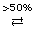

Module 8—Acid-Base Equilibrium
 Read
Read
To this point you have investigated titrations in which one proton transfer occurs. In an earlier lesson in this module you learned that polyprotic acids and bases exist. What would the titration curve for a polyprotic acid or base look like?
Read pages 755–759 in the textbook to learn how the shape of a titration curve for a polyprotic species is influenced by the occurrence of another acid-base reaction. As your read this section, recall the method you used to predict acid-base reactions. At this time also read pages 760–762 to learn how the shape of a pH curve is influenced by the strength of the acid or base being titrated.
 Try This
Try This
Sketching Titration Curves
The distinctive features of a pH curve are as follows:
- starting pH
- appearance of the initial buffering region
- pH at equivalence point
- height of region between buffering regions
- number of equivalence points
- ending pH
Examine the pH curves included on pages 752–757. Describe how the distinctive aspects of titration curves identify the type of substance being titrated.
Save your response in your course folder and submit a copy to your teacher for feedback.
 Self-Check
Self-Check
SC 2. Complete “Practice” questions 8 and 9 on page 759 of the textbook.
Self-Check Answers
Contact your teacher if your answers vary significantly from the answers provided here.
SC 2.
Practice 8.
- around pH 9
- phenolphthalein (pink endpoint), thymol blue (blue endpoint)
- CH3COOH(aq) + OH–(aq) → CH3COO–(aq) + H2O(l)
- The addition of titrant converts a small quantity of acetic acid into acetate ion, which has basic properties. As a result, there is a jump in pH. As titrant continues to be added, there is only a gradual change in the removal of acetic acid particles and appearance of acetation ions; so the pH change is less dramatic.
Practice 9.
a. and b.
Two reactions occur:
PO43–(aq) , Na+(aq) , H3O+(aq), Cl–(aq), H2O(l)
strongest base = PO43–(aq)
strongest acid = H3O+(aq)
PO43–(aq) + H3O+(aq) → HPO4–(aq) + H2O(l)
Since the first reaction was quantitative and titrant continues to be added, the possible reactants include:
HPO42–(aq) , Na+(aq) , H3O+(aq), Cl–(aq), H2O(l)
strongest base = HPO42–(aq)
strongest acid = H3O+(aq)
HPO42–(aq) + H3O+(aq) → H2PO4–(aq) + H2O(l)
The second reaction is quantitative as well.
The positions of H2PO4–(aq) and H3O+(aq) do not indicate a quantitative reaction would occur in a third reaction, although the reaction would favour the products.
Since there are two quantitative reactions, there would be two equivalence points on a pH curve.
c.
reaction 1: PO43–(aq) + H3O+(aq) → HPO42–(aq) + H2O(l)
reaction 2: HPO42–(aq) + H3O+(aq) → H2PO4–(aq) + H2O(l)
reaction 3: H2PO4–(aq) + H3O+(aq)  H3PO4(aq) + H2O(l)